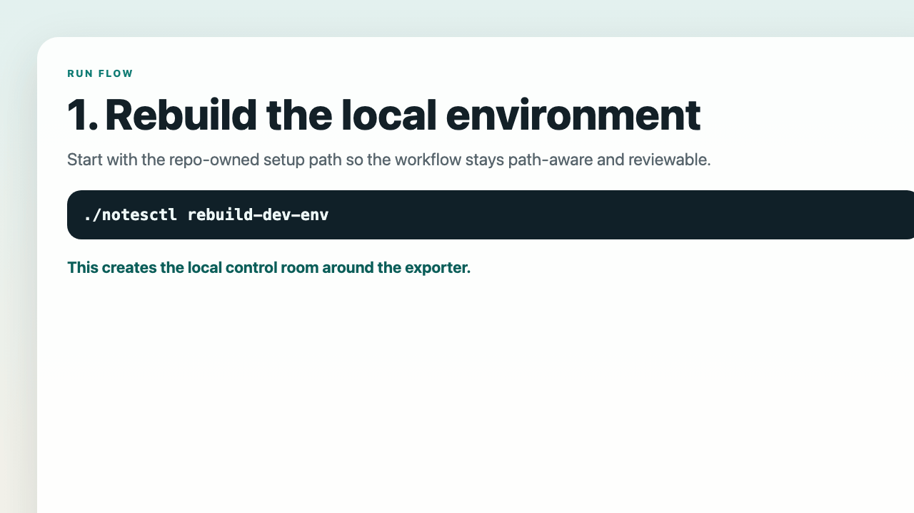

Check the export path before the first run so the control room starts in the right place.
Run Apple Notes Snapshot in 3 steps on macOS.
Treat this page like a first-flight checklist: confirm where snapshots will be written, allow the first export, then wire in the scheduler and health checks. The first run may trigger Apple Notes or AppleScript permission prompts, so this is not marketed as a one-minute shortcut.
Let macOS surface the first Apple Notes and AppleScript prompts before you automate anything.
Install launchd, verify freshness, and use doctor only after the first successful snapshot exists.
Prerequisites
- macOS with Apple Notes.app available
- AppleScript / `osascript` access
- `launchctl` for recurring snapshots
- Python 3 only if you want repo-owned verification or the optional local Web console
Fail fast before you call it broken
./notesctl --helpshould show the recommended first-run chain../notesctl permissionsshould show the macOS permission checklist../notesctl verifywill fail withno last_success recorduntil you finish the first manual export.- If the permission prompt never appears, use the troubleshooting guide before you assume the scheduler is wrong.
Before the first run, know where snapshots will land
The runtime configuration surface is config/notes_snapshot.env. If you keep
the defaults, snapshots are written to $HOME/iCloudDrive/NotesSnapshots.
If that is not where you want your backups, uncomment
NOTES_SNAPSHOT_ROOT_DIR before the first manual run.
# edit this file if you want a different export destination
config/notes_snapshot.env
# default path if you leave the config unchanged
$HOME/iCloudDrive/NotesSnapshotsThe 3-step path
Review the runtime config
Keep the default export path if it already fits you, or change it before the first snapshot so your backups start in the right place.
Run one export manually
The first run is the moment macOS can surface Apple Notes / AppleScript permission prompts. It also proves the exporter works before scheduling it.
./notesctl run --no-statusInstall the scheduler, then verify health
This is where the workflow becomes a real control room instead of a one-off command.
./notesctl install --minutes 30 --load
./notesctl verify
./notesctl doctor
Maintainer-grade verification lives after the first successful snapshot
The first successful snapshot does not require the repo-owned development environment. Rebuild it only when you want maintainer-grade verification commands or the optional local Web console.
./notesctl rebuild-dev-env
./.runtime-cache/dev/venv/bin/python -m pre_commit run --all-files
PYTHON_BIN=./.runtime-cache/dev/venv/bin/python scripts/checks/ci_gate.sh
Maintainer verification expects a local Python 3.11+ toolchain. The rebuild command
recreates .runtime-cache/dev/venv from scratch before you run the repo-owned
verification gates.
The optional Web console is not required for the first successful snapshot
The console is local by default. Keep it local unless you have a clear reason to expose more surface area, rebuild the repo-owned environment first, and set a token before you enable it.
export NOTES_SNAPSHOT_WEB_TOKEN="<long-random-token>"
./notesctl install --minutes 30 --load --web
./notesctl webIf your workflow is browser- or HTTP-shaped after setup, the same process also exposes the token-gated Local Web API for host-local reads.
What to do after setup
Check runtime health
./notesctl status --full
./notesctl verify
./notesctl doctorOpen the right next page
Proof for the trust ledger, Troubleshooting for first-run snags, or Local Web API only after the local loop already works.
After the first success, open Proof if you want the trust ledger, or Troubleshooting if the loop drifts later. Keep the Local Web API as an optional second-layer surface, not part of the first-run requirement.
Need help?
If a permission prompt, scheduler behavior, or first-run failure blocks you, use the public Q&A thread so the next user can benefit from the answer too.
Moved the checkout to a new path?
Reinstall the scheduler so the path-aware launchd surface points at the current checkout. If you also use the repo-owned verification environment or the optional Web console, rebuild that environment too.
./notesctl install --minutes 30 --load
./notesctl rebuild-dev-env